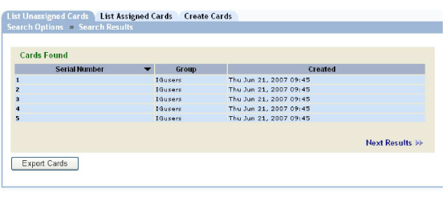

|
IdentityGuard Server 13.0 Administration Guide |
|
IdentityGuard Server 13.0 Administration Guide |
Use the following procedure to search for unassigned grid cards.
To find unassigned grid card information
1. Log in to the Administration interface (see Logging in and out of the Administration interface).
2. On the main menu, click Cards.
3. Click the List Unassigned Cards tab.
4. Enter your search criteria:
● To find a grid card with a specific serial number, type the serial number in the Serial Number field. (You cannot use a wildcard character when searching for unassigned grid cards.)
You can also enter card ranges. Examples of valid inputs are:
– 5,7,9
Displays cards with serial numbers 5, 7, and 9.
– 5-9
Displays cards with serial numbers between 5 and 9, inclusive.
– 5-
Displays cards with serial numbers 5 and higher.
– -5
Displays cards with serial numbers 5 and lower.
– 5,7-9,11-
Displays cards with serial numbers 5, 7, 8, 9, and 11 and higher.
To find all unassigned grid cards, leave the Serial Number field blank.
● To find grid cards associated with a specific group or groups, select the groups from the Groups list.
● To find grid cards created within a certain date range, select a date from the Creation Date list.
If you select Custom date range, choose a date range using the From and To drop-down lists (day, month, year). You can also click the calendar icons to select dates.
5. In the Showing results per page drop-down list, select the number of search results you want to appear per page.
6. Click the Search button.
The Search Results page appears.

7. For complete details for a grid card, click the grid card serial number.